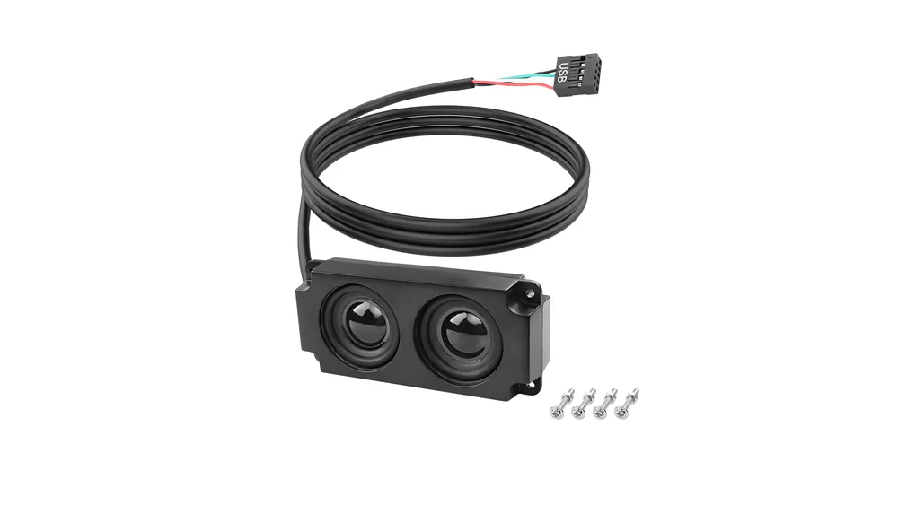
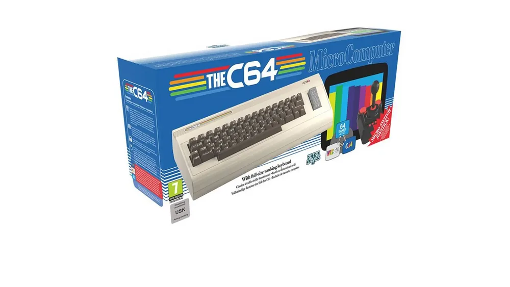
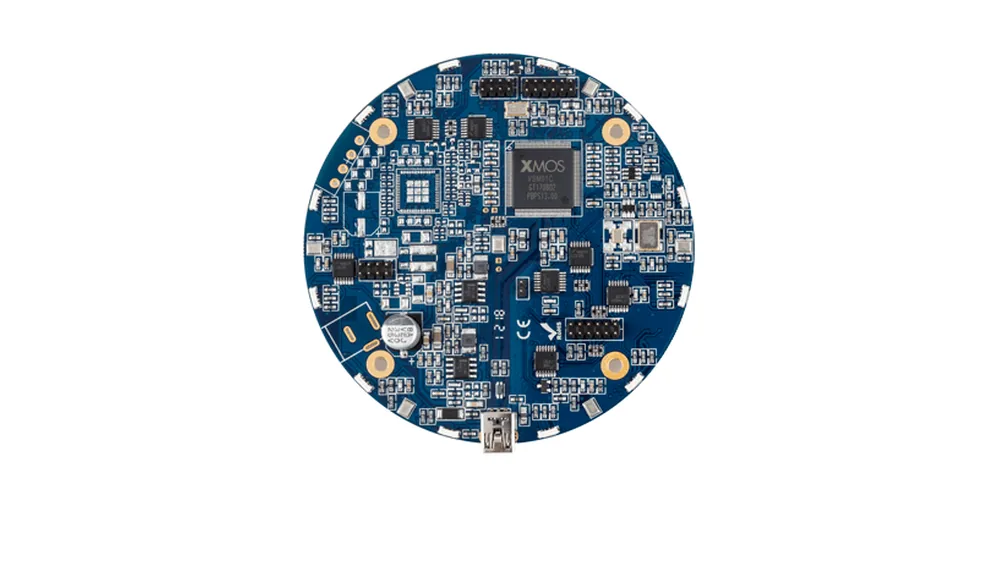
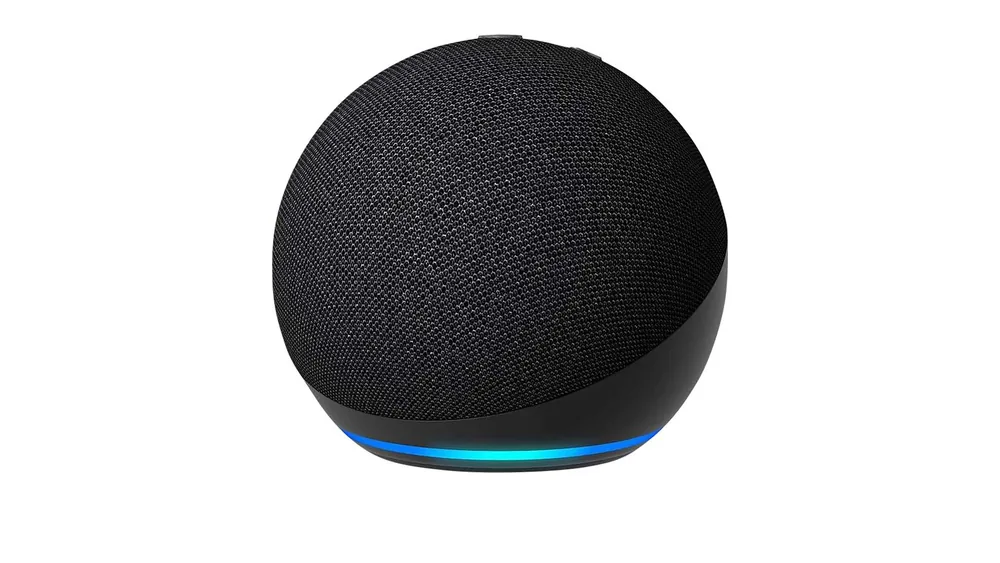

Audio output
- 1981, the PC speaker: For most early IBM PC users the built-in speaker was the only way to make sound. It was limited to simple square waves, and the result was nicknamed the “beeper”[1].
- 1982, Commodore 64: It shipped with the SID chip, a three-voice synthesiser with filters and envelopes.
- 1987, AdLib: The card used a Yamaha FM synthesis chip (the OPL2) with nine programmable voices. Many games adopted it as their music standard.
- 1989, Sound Blaster: It was AdLib-compatible and added an 8-bit DAC, a converter that turns digital samples into an analog signal. Games could now play recorded sound effects.
- 1990s, wavetable and 16-bit sound: Wavetable synthesis plays back recorded instrument samples instead of generating tones. Cards like the Gravis Ultrasound (1992) used it, and later Sound Blasters offered 16-bit stereo audio.
- 2001, 3D audio: Standards such as Environmental Audio Extensions added hardware-accelerated 3D positional sound, the basis of today’s spatial audio in games, cinema and VR.



Audio input
A microphone converts sound into an electrical signal, and a sound card digitises it with an analog-to-digital converter. Modern devices use several microphones together and a technique called beamforming: by combining the signals, the array focuses on sound coming from one direction and suppresses sounds from others. Digital signal processing (DSP) then removes echo, background noise and reverberation, so a smart speaker can hear a voice from across the room [2].

